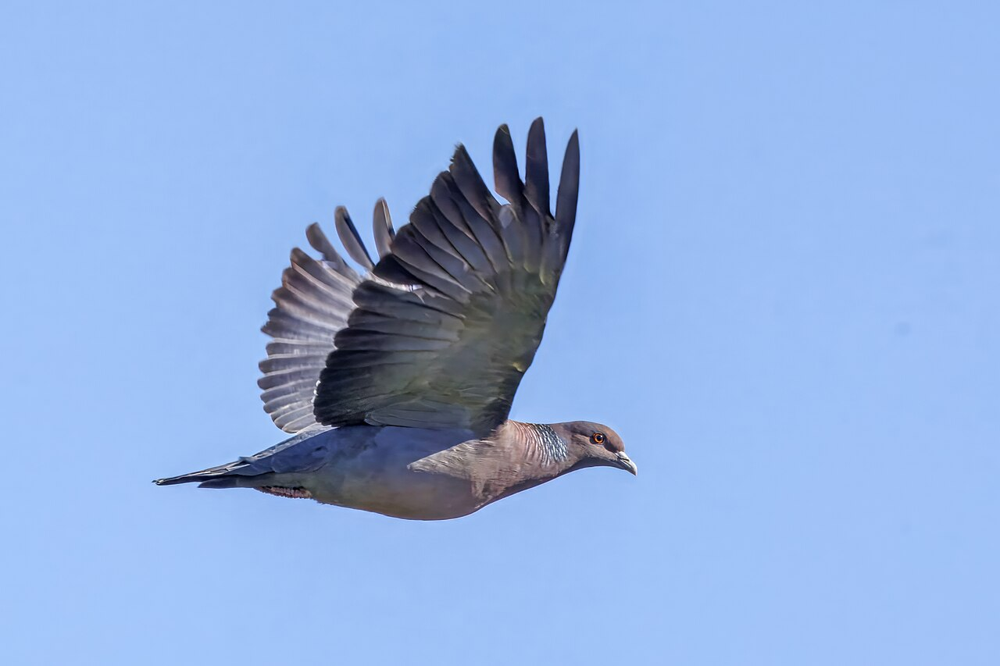
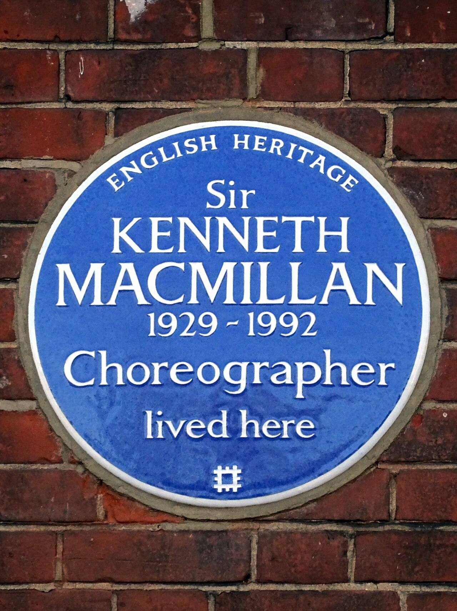

diario de la mañana — el mundo, tu ciudad y lo que te asombra
Nº 10Sábado 10 de octubre de 2026Buenos Aires≈ 35 min de lectura
Tapa: la Royal Opera House de Londres, donde nació Manon en 1974 y donde el Royal Ballet la repone el martes. Hoy es sábado de ballet. Ballet
Buen día. Sábado de estudio, nublado: para leer de a ratos. La sección de ballet de hoy es Manon, la que el Colón estrena en noviembre, con el pas de deux del dormitorio para mirar en video. La ciencia es de esas que dan vértigo: el árbol genealógico de 1,3 millones de células de un mismo ratón, desde el cigoto. Y ayer tembló fuerte en Panamá.
11° / 15°Mayormente nublado, con alguna lluvia aislada a la mañana y mejoras a la tarde. Humedad alta y viento leve del sur. Noche fresca, sin lluvia.
La península de Azuero, donde se concentraron los daños. Foto: United States National Imagery and Mapping Agency · Public domain · Wikimedia Commons
Ayer a las 12:56 (hora local), un terremoto sacudió el centro y el sur de Panamá. El Servicio Geológico de EE.UU. lo estimó primero en 8,0 y después lo bajó a 7,7; el Instituto de Geociencias de la Universidad de Panamá lo midió en 7,2. El epicentro estuvo en la península de Azuero, en la provincia de Herrera. Hubo colapsos de edificios y daños en plantas potabilizadoras en Los Santos, Herrera, Veraguas y Coclé, y más de cien réplicas, una de 6,9. Se emitió alerta de tsunami para varios países, que se levantó horas después. Los primeros reportes no confirmaban muertos, pero seguía la búsqueda entre escombros.
Por qué importa: Panamá está donde se encuentran cuatro placas (Cocos, Nazca, Caribe y el bloque de Panamá), y el canal por el que pasa alrededor del 5 % del comercio marítimo mundial cruza esa zona. Más en el English corner.
MéxicoEl huracán Simón, sobre Guerrero
Se habilitaron refugios temporales en Acapulco por la llegada del huracán Simón. Además, un motín en una cárcel dejó 10 muertos y 16 heridos.
FranciaSigue la rebelión de los liceos
Hubo nuevos enfrentamientos entre estudiantes y policías en París. El movimiento por el presupuesto educativo, del que te conté el jueves, ya lleva casi un mes.
Asia CentralCumbre de la CEI en Turkmenistán
La Comunidad de Estados Independientes, el bloque de exrepúblicas soviéticas que encabeza Rusia, se reúne en Turkmenistán. Mientras tanto, siguen los ataques cruzados: Rusia informó al menos dos muertos y nueve heridos por ataques ucranianos durante la noche.
Argentina y Buenos Aires no vivir adentro de un táper
La causa AMIA, a La Haya
El Gobierno analiza llevar el atentado a la AMIA a la Corte Internacional de Justicia
La idea es demandar a Irán ante la Corte Internacional de Justicia, el tribunal de la ONU que resuelve disputas entre Estados, por el atentado de 1994 que mató a 85 personas. A diferencia de la Corte Penal, la CIJ no juzga a personas sino a países. La justicia argentina atribuye el ataque a funcionarios iraníes y a Hezbolá, y hace décadas que pide sus detenciones sin resultado.
Militares argentinos a Brasil
Un decreto (DNU 1157/2026) autorizó la salida de tropas para el ejercicio combinado ARANDÚ 2026, que se hace en Brasil del 10 al 17 de octubre.
Tensión en Diputados
La oposición prepara una sesión para dejar sin efecto el DNU 70/23, el gran decreto de desregulación del comienzo del gobierno, y aprobar proyectos sobre deudas familiares y discapacidad. Milei la llamó una sesión de gente que «defiende sus cajas».
Ciencia nivel colega
La «máquina de escribir de ADN»: el árbol genealógico de 1,3 millones de células de un ratón
En los años 70, John Sulston siguió con un microscopio cada división de C. elegans, de la cigota al adulto: el único animal con el linaje celular completo (más en el asombro). En un mamífero eso era imposible: son miles de millones de células, y el embrión crece escondido en el útero. El grupo de Jay Shendure (Universidad de Washington y Seattle Hub for Synthetic Biology), con Chengxiang Qiu como coautor principal, publicó en Science el árbol de linaje de un ratón desde el cigoto hasta E13.5, con 1.340.794 células perfiladas por transcriptoma y anotadas. Al mismo tiempo, el grupo de Jonathan Weissman (Whitehead/MIT) presentó un trabajo complementario con otra técnica, PEtracer.
Cómo funciona la DNA Typewriter
La cinta: un ARN circular, transcripto por la Pol III, que lleva una serie de sitios vacíos en tándem (la «cinta», tape), y solo el primero está «abierto».
Las teclas: un prime editor (Cas9 nickasa fusionada a una transcriptasa reversa) y un conjunto de pegRNAs. Cada pegRNA inserta un pequeño código de unas pocas bases en el sitio abierto, y esa inserción abre el siguiente. Así, las ediciones quedan escritas en orden, como los caracteres de una máquina de escribir.
Por qué sirve para un linaje: las células hijas heredan la cinta de la madre y siguen escribiendo cada una por su lado. Dos células que comparten un prefijo largo tuvieron un ancestro común reciente; el orden de las inserciones permite fechar las bifurcaciones.
El experimento: microinyección pronuclear del prime editor, los pegRNAs y la cinta en cigotos wild type; a E13.5, secuenciación de núcleos individuales (snRNA-seq) con recuperación de la cinta de cada núcleo. Resultado: un árbol con 1.142.588 nodos internos fechados, 138 tipos celulares anotados y raíz en el cigoto.
Resultados
En el embrión con mejor registro, casi todas las células se pudieron asignar a uno de los dos primeros blastómeros.
Las células hermanas comparten tipo celular 9 veces más de lo esperado por azar, y entre 68 y 107 veces más en los tipos que salen de grupos fundadores espacialmente restringidos.
El árbol recupera la organización en capas germinales y una jerarquía fechada de «acoplamientos» entre tipos celulares, con puntos de ramificación desde E8.5.
Lectura crítica
n = 1 en el árbol principal: un solo animal. El desarrollo de los mamíferos es regulativo (las células cambian de destino según su posición), así que otro embrión daría otro árbol. Por eso el trabajo de Weissman, con 16 embriones en ventanas de medio día, es el complemento necesario.
Se perfila alrededor del 10 % de las células del embrión, y la disociación de núcleos pierde la información espacial. La genealogía dice quién es pariente de quién, no dónde estaba.
La eficiencia de edición y la saturación de la cinta limitan la resolución: si en una división no se escribe nada, esa bifurcación queda ciega.
La Universidad de Washington presentó una solicitud de patente sobre la técnica.
La conexión con lo que estudiás
Es la evolución del prime editing (Anzalone et al., 2019): de corregir mutaciones a usar la edición como memoria molecular. La lógica es la de la filogenética: las inserciones son caracteres heredables, y el árbol se reconstruye como un árbol de especies, pero dentro de un individuo. En biomedicina, la misma idea sirve para rastrear qué clon da origen a una metástasis o a la resistencia a una droga.
Biotec en el mundo real · Héritas: el ADN fetal, en una muestra de sangre de la madre
Héritas es una empresa de medicina de precisión de Rosario, fundada en 2015, con Martín Vázquez como fundador y director científico. Ofrece diagnóstico genómico en cuatro áreas: genómica clínica, oncología, microbioma y reproducción. Su plataforma Héritas Vision se presentó como el primer test prenatal no invasivo (NIPT) que se hace íntegramente en el país, sin mandar muestras al exterior.
El principio: en el plasma de una embarazada circula ADN libre (cfDNA) fetal, que en realidad viene del trofoblasto placentario. Son fragmentos cortos (unos 150 pb, más cortos que los maternos) y representan alrededor del 10 % del cfDNA total desde la semana 10. Esa proporción, la fracción fetal, es el control de calidad clave: si es baja, el resultado no se informa.
El método más usado: secuenciación masiva de baja cobertura de todo el cfDNA, alineamiento de millones de lecturas y conteo de cuántas caen en cada cromosoma. Si el feto tiene trisomía 21, la proporción de lecturas del cromosoma 21 sube levemente, y eso se detecta con un z-score respecto de una población de referencia. Requiere corregir el sesgo de contenido GC de la secuenciación.
Es un tamizaje, no un diagnóstico: la sensibilidad para la trisomía 21 supera el 99 %, pero el valor predictivo positivo depende de la edad materna, y existe el mosaicismo confinado a la placenta. Un resultado positivo se confirma con amniocentesis o biopsia de vellosidades.
Por qué hacerlo acá: cortar los envíos al exterior baja costos y tiempos de respuesta, y deja la bioinformática y los datos genómicos de la población en el país.
Salida laboral: bioinformática clínica, laboratorio de NGS bajo normas de calidad (ISO 15189), asesoramiento y validación analítica.
Ciencia en la vida cotidiana · Por qué la acelga deja los dientes «ásperos»
Esa sensación de dientes ásperos después de comer acelga o espinaca es química. Las dos tienen mucho ácido oxálico (más de 0,5 g por cada 100 g de hoja), y en la boca el oxalato precipita con el calcio de la saliva y forma cristales microscópicos de oxalato de calcio (Ca(COO)₂, muy insoluble: Kps del orden de 10⁻⁹). Son esos cristales lo que sentís con la lengua. Por la misma razón, el calcio de la acelga se absorbe mal: queda atrapado en el oxalato.
El truco: hervirla y tirar el agua de cocción baja mucho el oxalato soluble. Y si la comés con algo rico en calcio (como la ricota de la receta de hoy), el oxalato precipita en el plato y no en tu boca.
Mirá a tu alrededor flor y ave de la semana
La Santa Rita y la paloma picazuró
Santa Rita: lo fucsia no son pétalos. Foto: A S M Jobaer · CC BY-SA 4.0 · Wikimedia Commons

Paloma picazuró. Foto: Charles J. Sharp · CC BY-SA 4.0 · Wikimedia Commons
La flor: Santa Rita
Nombre científico
Bougainvillea spp. (Nictagináceas), nativa de Sudamérica
Dónde
Cubre muros, pérgolas y balcones; ahora empieza la temporada de flor, que dura hasta el otoño.
Cómo mirarla
Lo que parecen pétalos fucsias, violetas o naranjas son brácteas, hojas modificadas. La flor verdadera es el tubito blanco o crema, chiquito, que hay en el centro de cada grupo de tres brácteas.
Química
El color no son antocianinas, como en la mayoría de las flores, sino betalaínas (betacianinas), los mismos pigmentos nitrogenados de la remolacha. Una planta tiene una o la otra, nunca las dos.
El ave: paloma picazuró
Nombre científico
Patagioenas picazuro (Colúmbidos)
Cómo reconocerla
Más grande que la paloma doméstica (unos 35 cm), gris vinoso, con un collar de plumas escamadas blanco y negro en la nuca y una franja blanca en el ala que se ve al volar.
El canto
Un arrullo grave y rítmico, «cu-cú-cuuu», que es la banda sonora de las mañanas porteñas.
Dato
Hace 50 años casi no se la veía en la ciudad. Llegó desde el campo y hoy es una de las aves más comunes de Buenos Aires.
Tu misión de hoy
Receta de estación acelga de primavera · con su química
Tarta de acelga y ricota
Para cocinar entre capítulo y capítulo y tener para el domingo de hockey.
1 cebolla, queso rallado, nuez moscada, sal y pimienta
Pasos
Separá las hojas de las pencas. Hervilas 2 minutos, tirá el agua y escurrilas muy bien, apretando.
Rehogá la cebolla con las pencas picadas y sumá las hojas picadas.
Mezclá con la ricota, los huevos, el queso y la nuez moscada.
Rellená, tapá, pintá con huevo y hacé un corte en el centro. 35 a 40 minutos en horno a 200 °C.
La química de la receta
La ricota es suero recocido: se hace calentando el suero que sobra del queso (casi sin caseína) a unos 85-90 °C y acidificándolo. Las proteínas del suero (β-lactoglobulina y α-lactoalbúmina) se desnaturalizan con el calor, exponen sus grupos hidrofóbicos y sus tioles libres, y forman agregados por puentes disulfuro, que flotan como copos. «Ri-cotta» quiere decir eso: recocida.
Escurrir bien la acelga: el agua que queda se libera en el horno y deja la tarta húmeda. Y como viste en la ciencia cotidiana, hervirla y tirar el agua baja el oxalato.
El brillo de la tapa: el huevo batido aporta proteínas y azúcares reductores para la reacción de Maillard, y la yema, lípidos que dan brillo.
Un clásico en cinco minutos
Shakespeare, soneto 116: el amor que no cambia
1609. El reverso perfecto de la historia de Manon. Traducción propia.
El retrato Chandos, atribuido a Shakespeare. Foto: Attributed to John Taylor · Public domain · Wikimedia Commons
Que no ponga yo impedimentos a la unión de dos mentes leales. No es amor el amor que cambia cuando encuentra un cambio, o se aleja cuando el otro se aleja.
Oh, no: es una marca fija para siempre, que mira las tormentas y nunca tiembla; es la estrella de todo barco a la deriva, de valor desconocido, aunque se mida su altura.
El amor no es bufón del Tiempo, aunque los labios y mejillas rosados caigan bajo el filo de su hoz; el amor no cambia con sus horas y semanas breves, sino que resiste hasta el borde del juicio final.
Si esto es un error y se prueba en mi contra, yo nunca escribí, y nadie nunca amó.
Para entrar al poema
«Impedimentos» es un eco del rito anglicano del casamiento: «si alguien conoce algún impedimento…». El poema es una declaración casi jurídica.
La estrella del barco: es la estrella polar, cuya altura sobre el horizonte se mide con un sextante para navegar, aunque nadie sepa qué es. El amor sirve para orientarse aunque no se lo entienda.
El puente con el ballet: en Manon, ella cambia «cuando encuentra un cambio»: la seducen la plata y las joyas. Des Grieux es el amor del soneto, el que no se mueve. Mirá el video de hoy pensando en estos versos.
La palabra del día de dónde viene
linaje sustantivo
latín linea (hilo de lino, línea) → occitano y catalán linhatge, llinatge → castellano linaje · francés lignage · inglés lineage
Todo empieza con el lino: en latín, linea era el hilo de lino, y después cualquier línea trazada. Una familia se pensó como un hilo que se continúa de padres a hijos, y en la Edad Media, en el sur de Francia y en Cataluña, nació el linhatge: la línea de descendencia de una casa noble. Al castellano llegó como «linaje», con su olor a escudos y apellidos.
La biología se quedó con la palabra para algo menos aristocrático: el linaje celular, la línea de descendencia de una célula. Es exactamente lo que escribe la «máquina de escribir de ADN» de la ciencia de hoy. Y de la misma raíz salen lino, línea, alinear y lencería.
Le français du matin repaso de la semana 2
Le samedi, j'étudie
Tu fin de semana en cuatro frases. Escuchalo dos veces.
Le samedi, j'étudie.
Le dimanche, je joue au hockey.
J'aime beaucoup le ballet.
À lundi !
Le samedi
Los sábados [lə sam-DÍ]
je joue au hockey
juego al hockey [yə yu o o-KÉ]
beaucoup
mucho [bo-KÚ]
le ballet
el ballet [lə ba-LÉ]
À lundi !
¡Hasta el lunes! [a lan-DÍ]
Un truco
Con el artículo le delante, el día de la semana pasa a ser una costumbre: samedi es «el sábado» (este), le samedi es «los sábados» (todos). Y en hockey la h no suena, como en castellano. El francés no pronuncia nunca la h.
À toi:
English corner level C1 · science and news
Where four plates meet
Panama is, geologically speaking, a latecomer. For most of Earth's history, the Atlantic and the Pacific flowed freely into one another between the Americas. Only around three million years ago did volcanic activity and the grinding of tectonic plates finally close the gap, raising the narrow isthmus that would one day carry a canal. That same restlessness has never quite gone away.
The country sits at a crossroads of the Cocos, Nazca and Caribbean plates, with a smaller Panama block wedged in between. Stresses build up along their boundaries for decades, sometimes centuries, before giving way in a matter of seconds. Friday's earthquake, initially pegged at magnitude 8.0 before being revised down to 7.7, was a stark reminder that the region is far from settled.
Early reports suggested that the death toll was mercifully low, but the damage to water treatment plants in the Azuero peninsula could prove more insidious in the weeks ahead. In disasters of this kind, it is often not the shaking itself but the knock-on effects, from contaminated water to disrupted supply chains, that take the heaviest toll.
a latecomer — un recién llegado
to grind — moler, rozar con fricción
restlessness — inquietud, desasosiego
wedged in between — encajado, metido a presión entre
to give way — ceder, romperse
to peg at — fijar, estimar en (una cifra)
insidious — que avanza de forma silenciosa y dañina
knock-on effects — efectos en cadena, colaterales
Your turn (answer in English):
Sábado de ballet
Manon, de Kenneth MacMillan (1974)
Un ballet sin cisnes ni hadas: una chica, la plata y un amor que la arrastra hasta un pantano de Luisiana. El Ballet Estable del Colón lo hace del 5 al 15 de noviembre.
En 1731, el abate Prévost publicó Historia del caballero Des Grieux y de Manon Lescaut, una novela escandalosa para su época. Manon tiene 16 años y va camino de un convento cuando conoce, en una posada, a Des Grieux, un estudiante de teología. Se fugan a París. Pero Manon quiere amor y lujo, y su hermano Lescaut se la vende a un rico, Monsieur G. M. Ella vuelve con Des Grieux, la arrestan por prostitución y la deportan a la colonia francesa de Luisiana. Des Grieux la sigue y ella muere en sus brazos, en un pantano.
El abate Prévost.
La historia ya era ópera dos veces (Massenet en 1884, Puccini en 1893) cuando Kenneth MacMillan la llevó al ballet para el Royal Ballet en 1974, con Antoinette Sibley y Anthony Dowell. Para no competir con las óperas, no usó la música de la ópera de Massenet: Leighton Lucas armó una partitura con otras obras del mismo compositor (canciones, oratorios, piezas orquestales).

La placa azul en la casa de Londres donde vivió MacMillan. Foto: Spudgun67 · CC BY-SA 4.0 · Wikimedia Commons
Por qué es distinto
No hay virtuosismo por el virtuosismo: MacMillan venía de la escuela británica de ballet narrativo, como Frederick Ashton, pero más oscura. Cada paso cuenta algo del personaje.
Los lifts: el ballet es famoso por sus elevaciones, en las que Manon parece volar, girar en el aire o caer de cabeza a los brazos de Des Grieux. Son de las más difíciles del repertorio para la pareja.
La heroína no es buena: Manon no es Giselle ni Odette. Es ambiciosa, contradictoria y muy joven. Eso hace al papel tan buscado por las bailarinas.
Para mirar: el pas de deux del dormitorio, en ensayo
Qué mirar: Antoinette Sibley y Anthony Dowell, los primeros Manon y Des Grieux, les enseñan el papel a Melissa Hamilton y Matthew Golding. Es el primer acto, en el cuarto de París: Des Grieux escribe una carta a su padre y Manon lo interrumpe hasta que él deja la pluma. Fijate cómo los creadores corrigen detalles mínimos (el ángulo de una mano, el tiempo de una mirada) que cambian el sentido de la escena.
Qué mirar en una función
Acto I, el pas de deux del dormitorio: el amor feliz, todo entrega y juego.
Acto II, la fiesta: Manon pasa de mano en mano entre los hombres, elevada sin tocar el piso. Es el mismo tipo de lift del dormitorio, pero ahora es una mercancía.
Acto III, el pas de deux del pantano: Manon, rapada y deportada, delira y muere. Las elevaciones del amor feliz vuelven, pero desesperadas. Es una de las escenas más intensas del ballet del siglo XX.
La sala del Teatro Colón.
En Buenos Aires y en el mundo
El Ballet Estable del Teatro Colón, dirigido por Julio Bocca, presenta Manon del 5 al 15 de noviembre, y cierra el año con El cascanueces. Fijate el elenco y las entradas en teatrocolon.org.ar. Y en Londres, el Royal Ballet abre su temporada 2026/27 con Manon el martes 13 de octubre. Marianela Núñez, la argentina primera bailarina de esa compañía, es una de las grandes Manon de su generación.
Hoy en la historia · un lugar en el mapa
10 de octubre de 1911: el levantamiento de Wuchang, el fin del último emperador
Sun Yat-sen, primer presidente provisional de la República de China. Foto: 上海同生照相馆 (K.T. Thompson) · Public domain · Wikimedia Commons
En la noche del 10 de octubre de 1911, soldados del Nuevo Ejército de la dinastía Qing se sublevaron en Wuchang. Un accidente había apurado los planes: días antes había explotado una bomba en un depósito de los revolucionarios en Hankou, y la policía encontró las listas de los conjurados. Iban a ser arrestados, así que se levantaron antes. En pocas semanas, la mayoría de las provincias del sur declararon su independencia de Pekín. El 1 de enero de 1912, Sun Yat-sen asumió como presidente provisional de la República de China, y en febrero abdicó Puyi, el último emperador, de 6 años. Se terminaban más de dos mil años de imperio.
El 10 de octubre todavía se celebra como el «Doble Diez» (por el décimo día del décimo mes), el día nacional de Taiwán, donde se refugió el gobierno de la República en 1949.
El lugar: Wuhan
Wuhan, sobre el Yangtsé. Foto: User:Vmenkov · CC BY-SA 3.0 · Wikimedia Commons
Dónde
En el centro de China, en la confluencia del río Yangtsé y su afluente, el Han.
El nombre
Wuhan es la unión de tres ciudades: Wuchang, Hankou y Hanyang, que se fusionaron en 1927.
Hoy
Una metrópoli de más de 13 millones de habitantes, nudo ferroviario e industrial, con grandes universidades. El mundo la conoció en 2020 como el lugar donde se detectó por primera vez el SARS-CoV-2.
Lo que me asombra hoy
El gusano al que le conocemos cada célula, y las 131 que mueren a propósito
Un adulto hermafrodita de Caenorhabditis elegans mide un milímetro y tiene exactamente 959 núcleos somáticos, siempre los mismos, en el mismo lugar. En los años 70, John Sulston pasó meses mirando embriones vivos con un microscopio de contraste interferencial, dibujando a mano cada división, hasta reconstruir el linaje completo, de la cigota al adulto. Ningún otro animal se conoce así.
Lo más asombroso apareció en el camino: a lo largo del desarrollo nacen 1.090 células, pero 131 mueren, siempre las mismas y en el mismo momento. Es muerte programada. Robert Horvitz buscó los mutantes en los que esas células no morían y encontró los genes ced-3, ced-4 y ced-9: los equivalentes de nuestras caspasas, de APAF-1 y de BCL-2. Así se descubrió la maquinaria molecular de la apoptosis. Sulston, Horvitz y Sydney Brenner ganaron el Nobel en 2002.
Pasatiempo sudoku · nivel difícil
Para el recreo del estudio
Completá cada fila, cada columna y cada caja de 3×3 con los números del 1 al 9, sin repetir. Tiene una sola solución.
576313954897632647119522869
Cuaderno para repasar lo de hoy
Repaso y quiz de la mañana
Repaso de idiomas
Quiz
¿Qué enzima escribe las marcas en la DNA Typewriter?
¿Hasta qué estadio llega el árbol del ratón?
¿De dónde viene el ADN «fetal» libre en la sangre materna?
¿Por qué un NIPT positivo se confirma con un estudio invasivo?
¿Qué forma el ácido oxálico de la acelga con el calcio de la saliva?
Lo fucsia de la Santa Rita son…
¿Quiénes fueron los primeros Manon y Des Grieux de MacMillan?
¿Dónde muere Manon?
«Le dimanche, je joue au hockey» significa…
«Knock-on effects» son…
Escritura: tres líneas para hoy
Soluciones tocá para destapardadas vuelta, para no espiar
Quiz: un prime editor · E13.5 · del trofoblasto · tamizaje y mosaicismo · oxalato de calcio · brácteas con betalaínas · Sibley y Dowell · en un pantano de Luisiana · los domingos juego al hockey · efectos en cadena.
Repaso: aujourd'hui, c'est vendredi · le film est à huit heures du soir · il est sept heures et quart · disimular, tapar · en rigor · una rareza.
Français 1: Le dimanche, je joue au hockey.
English 1 (por ejemplo): Contaminated water can spread disease for weeks after the earthquake, long after the shaking stops.


_in_flight_Colonia.jpg){kind=link}